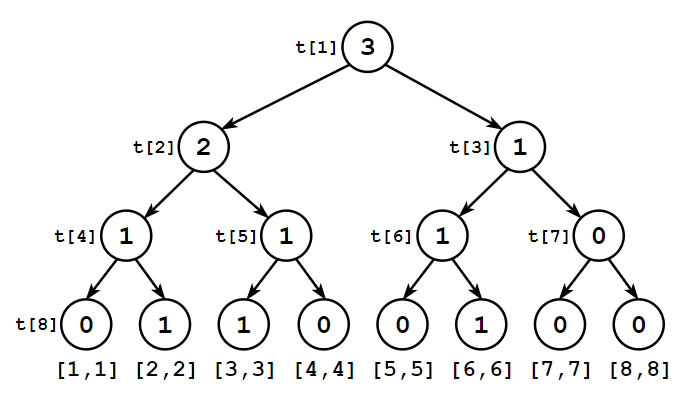
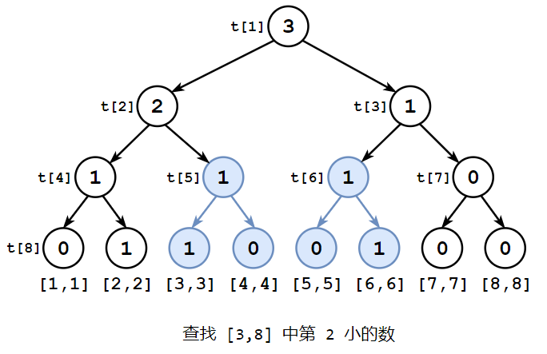

线段树
 Apr 9, 2021
Apr 9, 2021
 Menu
Menu
问题 ¶
数组 $A$ 中共 $n$ 个元素，对其反复进行以下操作共 $m$ 次：
-
单点修改：将 $A[id]$ 修改为 $v$.
-
区间查询：查询 $A[l\cdots r]$ 的最小值.
-
区间修改：将 $A[l\cdots r]$ 每个数加上 $v$.
int a[];
void set(int id, int v) { // 单点修改
a[id] = v;
}
int ask(int l, int r) { // 区间查询
int ans = 0;
for(int i = l; i <= r; i ++)
ans = min(ans, a[i]);
return ans;
}
void add(int l, int r, int v) { // 区间修改
for(int i = l; i <= r; i ++)
a[i] += v;
}
| 暴力算法（$\textcolor{red}{×}$） | 线段树（$\textcolor{green}{√}$） | |
|---|---|---|
| 单点修改 | $\textcolor{green}{O(1)}$ | $\textcolor{green}{O(\log{n})}$ |
| 区间查询 | $\textcolor{red}{O(n)}$ | $\textcolor{green}{O(\log{n})}$ |
| 区间修改 | $\textcolor{red}{O(n)}$ | $\textcolor{green}{O(\log{n})}$ |
| $m$ 次操作 | $\textcolor{red}{O(mn)}$ | $\textcolor{green}{O(m\log{n})}$ |
构造 ¶
查询数组 $A={6,2,3,7,1,5,4,2}$ 中的最小值时，通常使用「两两比较法」：每次比较相邻两项，只保留更小的一项.比较的过程可以画成一棵二叉树，树根是答案.

这么做又有什么好处呢？假如数列中的 $1$ 被改为 $7$，你可以通过修改极少的数值，重新得出正确答案.

线段树就是这样的一颗二叉树，它的每个节点都代表一段区间中的最小值.
线段树具有以下性质：
-
根节点的值为 $t[1]$，代表整个数组的最小值.
-
$t[u]$ 的左子节点为 $t[2u]$，右子节点为 $t[2u+1]$.
-
$t[u]=\min(t[2u],t[2u+1])$.

因此，每个节点需要保存以下信息：
-
节点的值：$val$.
-
节点代表的区间：$[l,r]$.
从根节点开始，自顶向下递归构建线段树.时间复杂度为 $O(n\log{n})$.
struct Node {
int val, l, r;
#define t(u) t[u].val
#define l(u) t[u].l
#define r(u) t[u].r
} t[];
void build(int u, int l, int r) {
l(u) = l, r(u) = r;
if(l == r) { // 当前节点为叶节点
t(u) = a[l]; return;
}
int m = (l + r) / 2;
build(2 * u, l, m); // 递归构建左子树
build(2 * u + 1, m + 1, r); // 递归构建右子树
t(u) = min(t(2 * u), t(2 * u + 1));
}
单点修改 ¶
假设你要将 $A[5]$ 修改为 $3$，则 $A[5]$ 的所有祖先都有可能变动.

$set(u,id,v)$：在以节点 $u$ 为根的子树中，找到 $A[id]$，并将其更新为 $v$.
-
令 $\su m=\frac{l(u)+r(u)}{2}$；
-
若 $id≤m$，则 $A[id]$ 在左子树中，搜索左子树；
-
若 $id>m$，则 $A[id]$ 在右子树中，搜索右子树；
-
更新当前节点值：$t[u]=\min(t[2u],t[2u+1])$.
时间复杂度为 $O(\log{n})$.
根节点是搜索的入口.执行 $set(1, id, v)$ 以进行单点修改.
void set(int u, int id, int v) { // 将 a[id] 改为 v
if(l(u) == r(u)) { // 叶节点
a[id] = t(u) = v; return;
}
int m = (l(u) + r(u)) / 2;
if(id <= m) set(2 * u, id, v); // 搜索左子树
else set(2 * u + 1, id, v); // 搜索右子树
t(u) = min(t(2 * u), t(2 * u + 1));
}
区间查询 ¶
线段树中，每个节点代表一个区间.那么反过来想，每个区间都可以用若干节点表示.例如 $A[1\cdots 6]$ 可以用 $t[2]$ 和 $t[6]$ 表示，那么 $A[1\cdots 6]$ 的最小值 $=\min(t[2],t[6])=2$.

从根节点开始，自顶向下搜索出范围在 $[l,r]$ 之内的节点，这些节点的最小值即为答案.
$get(u,l,r)$：从节点 $u$ 开始，向下搜索 $A[l\cdots r]$ 的最小值.
-
若 $u$ 的范围在 $[l,r]$ 之内，直接返回 $t[u]$；
-
若 $u$ 的范围与 $[l,r]$ 不重叠，返回 $∞$1；
-
否则递归搜索 $u$ 的两个子节点.
时间复杂度为 $O(\log{n})$.执行 $get(1,l,r)$ 以进行区间查询.
int get(int u, int l, int r) {
if(l <= l(u) && r(u) <= r) return t(u); // 1. 被包含
if(l(u) > r || r(u) < l) return 0x3f3f3f; // 2. 不重叠
return min(get(2 * u, l, r), get(2 * u + 1, l, r)); // 3. 递归搜索
}
区间修改 + 延迟标记 ¶
如果一次性将 $A[3\cdots 8]$ 每个数加上 $v$，需要更新大量节点，时间复杂度接近 $O(n\log{n})$.这不是我们希望看到的.

事实上，大部分节点用不着马上更新——直到它们再次被访问.于是我们可以先给部分节点打标记.
在本例中，$t[3]$ 和 $t[5]$ 被打上了标记，这代表它们的所有子节点都还没加上 $v$.

当访问 $A[5\cdots 6]$ 时，再更新 $t[3]$ 的左子树 .$t[3]$ 的标记被下传到了它的右节点 $t[7]$.

代码与 区间查询 类似.时间复杂度为 $O(\log{n})$.
int mark[];
void spread(int u) { // 更新 u 的子节点，并下传标记
if(mark[u]) {
t(2 * u) += mark[u];
t(2 * u + 1) += mark[u];
mark[2 * u] += mark[u];
mark[2 * u + 1] += mark[u];
mark[u] = 0;
}
}
void add(int u, int l, int r, int v) { // 将 A[l...r] 每个数加上 v
if(l <= l(u) && r(u) <= r) { // 完全覆盖
t(u) += v, mark[u] += v; return; // 标记
} else if(l(u) > r || r(u) < l) return;
spread(u); // 下传标记
int m = (l + r) / 2;
add(2 * u, l, r, v);
add(2 * u + 1, l, r, v);
t(u) = min(t(2 * u), t(2 * u + 1));
}
void set(int u, int id, int v) {
if(l(u) == r(u)) {
a[id] = t(u) = v; return;
}
spread(u); // 下传标记
int m = (l(u) + r(u)) / 2;
if(id <= m) set(2 * u, id, v);
else set(2 * u + 1, id, v);
t(u) = min(t(2 * u), t(2 * u + 1));
}
int get(int u, int l, int r) {
if(l <= l(u) && r(u) <= r) return t(u);
else if(l(u) > r || r(u) < l) return 0x3f3f3f;
spread(u); // 下传标记
int m = (l + r) / 2;
return min(get(2 * u, l, m), get(2 * u + 1, m + 1, r));
}
模板 ¶
struct Node {
int val, l, r;
#define t(u) t[u].val
#define l(u) t[u].l
#define r(u) t[u].r
} t[];
int mark[];
void build(int u, int l, int r) {
l(u) = l, r(u) = r;
if(l == r) {
t(u) = a[l]; return;
}
int m = (l + r) / 2;
build(2 * u, l, m);
build(2 * u + 1, m + 1, r);
t(u) = min(t(2 * u), t(2 * u + 1));
}
void spread(int u) {
if(mark[u]) {
t(2 * u) += mark[u];
t(2 * u + 1) += mark[u];
mark[2 * u] += mark[u];
mark[2 * u + 1] += mark[u];
mark[u] = 0;
}
}
void set(int u, int id, int v) {
if(l(u) == r(u)) {
a[id] = t(u) = v; return;
}
spread(u);
int m = (l(u) + r(u)) / 2;
if(id <= m) set(2 * u, id, v);
else set(2 * u + 1, id, v);
t(u) = min(t(2 * u), t(2 * u + 1));
}
int get(int u, int l, int r) {
if(l <= l(u) && r(u) <= r) return t(u);
else if(l(u) > r || r(u) < l) return 0x3f3f3f;
spread(u);
int m = (l + r) / 2;
return min(get(2 * u, l, m), get(2 * u + 1, m + 1, r));
}
void add(int u, int l, int r, int v) {
if(l <= l(u) && r(u) <= r) {
t(u) += v, mark[u] += v; return;
} else if(l(u) > r || r(u) < l) return;
spread(u);
int m = (l + r) / 2;
add(2 * u, l, r, v);
add(2 * u + 1, l, r, v);
t(u) = min(t(2 * u), t(2 * u + 1));
}
区间和线段树 ¶
线段树还可以查询区间和.
令每个节点代表一段区间的元素和.递推方程应为 $t[u]=t[2u]+t[2u+1]$.

若 $t[u]$ 表示区间 $[l,r]$，而 $A[l\cdots r]$ 每个数都要加上 $v$，则 $t[u]$ 需要加上 $(r-l+1)×v$.因此标记下传函数也需要调整.
void spread(int u) {
if(mark[u]) {
t(2 * u) += mark[u] * (l(2 * u) - r(2 * u) + 1);
t(2 * u + 1) += mark[u] * (l(2 * u + 1) - r(2 * u + 1) + 1);
mark[2 * u] += mark[u];
mark[2 * u + 1] += mark[u];
mark[u] = 0;
}
}
权值线段树 ¶
令每个节点代表一段区间内的元素个数.下图是基于数组 $A=\{2,3,6\}$ 构建的权值线段树.$t[2]$ 代表的区间为 $[1,4]$，$t[2]=2$ 说明数组 $A$ 中有 $2$ 个元素在 $[1,4]$ 区间中，它们分别是 $2$ 和 $3$.

权值线段树可以用来做什么呢？— — 它可以求任一区间内第 $k$ 小的数.

未完待续 $\cdots \ \cdots$
-
$\min(∞,a)=a$，因此返回 $∞$ 相当于不参与最小值的比较. ↩︎